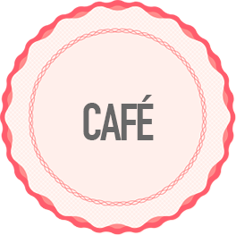
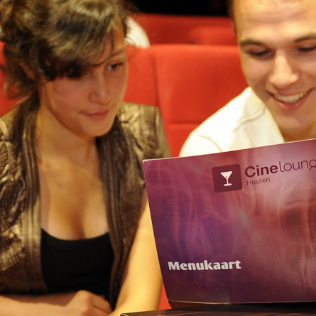
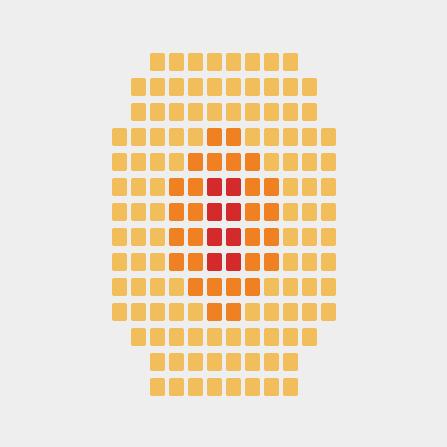
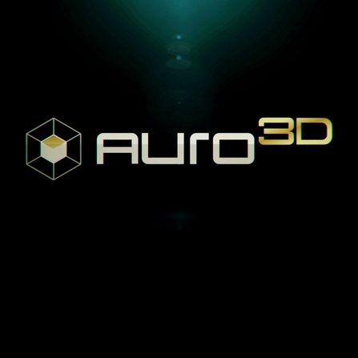

- 
-
Wees welkom en neem plaats!
In het sfeervolle café van Filmpje kunt u uw drank en popcorn bestellen voor de ultieme film belevenis. Het Café biedt ook verschillende verse broodjes die verkrijgbaar zijn in de middag, waarvan u uitgebreid kunt genieten in de luxe lounge plekken.
Op de pagina is ook te zien wat u allemaal kan bestellen, en of dat binnen uw dieëet past!
Lees meer
-
Alles over Filmpje
Vragen? Bekijk onze contact pagina! U vindt hier onze openingstijden, contactgegeven en de locatie van onze bioscoop!
Het balie personeel van Filmpje staat altijd voor u klaar en zal zo snel mogelijk reagereen op vragen en op- of aanmerkingen.
Lees meer - 
- 
-
Unieke zalen
Wij, bij Filmpje, hebben voor een unieke zaalindeling gekozen. Zo zijn er 3 prijsklassen wat betreft de stoelen, waarbij de duurdere een net iets luxere kijkervaring bieden.
Waarom? Op deze manier willen wij de bioscoop, ondanks de crisis, leuk houden voor iedereen! Dus zowel de student als de zakenman kan bij ons terecht.
-
Auro-3D
Een film kijken moet een ervaring zijn. Wij gebruiken het revolutionaire Auro-3D, wat u een onvergetelijke geluidsbeleving biedt: u hoort geluid uit alle kanten van de zaal, waardoor u het gevoel krijgt zelf in de film te zitten.
Ook hier speelt onze zaalindeling weer een bijzondere rol. Door de ronde vorm van de zaal heeft iedere plek super goed geluid!
- 